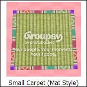
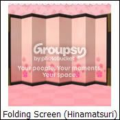
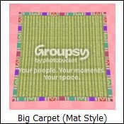
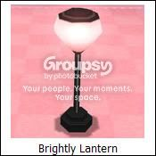

แลกของกับ Npc Furniture Craftsman *-*
จากที่แลกมานะคะ รับเควส/ส่งเควสได้กับ Npc Furniture Craftsman ทุกตัวค่ะ
แล้วก็ตามคำใบ้ที่มันบอกเอาพวกถังสีมาแลก ใช้ไม่ได้ค่ะ
มีเพียงคำใบ้เดียวที่ใบ้บอกว่าเอา Otsukimi Dango มาแลกเท่านั้นที่ตรงค่ะ
ถ้าส่งวันเสาร์จะมีให้ส่งทั้งหมด 6 อย่าง ดังนี้ค่ะ
1.แลกChairห้องชงชา = ส่ง Lacquer Chair 2 ชิ้น หาของส่งไม่ได้ค่ะ ่คิดว่าของที่ได้น่าจะเป็น Ancient Cushion อ่ะจ้า

2.แลกSmall Carpet = ส่ง Small Carpet 2 ชิ้น ไม่คิดจะส่งอ่า เพราะคิดว่าน่าจะได้ Small Carpet(MatStyle) อ่ะจ้า -*-
3.แลกShikaku Mochi = ส่ง Otsukimi Dango 1 ชิ้น เอาดังโกะสี่เหลี่ยมแลกได้ดังโกะสี่เหลี่ยมขนมเปียกปูน

4.แลกBackdrop = ส่ง Sloop 1 ชิ้น ได้ฉากกั้นห้องสีชมพู Folding Screen(Hinamtsuri) ส่วนตัวคิดว่า Sloop แพงกว่านะ - -
ได้ฉากกั้นห้องสีชมพู Folding Screen(Hinamtsuri) ส่วนตัวคิดว่า Sloop แพงกว่านะ - -
5.แลกBig Carpet = ส่ง ฺBig Carpet 1 ชิ้น ส่งแล้วจะได้ เสื่อใหญ่เขียว ฺBig Carpet(Mat Style) -*-
6.แลกโคมกระดาษ = ส่ง Lamp 1 ชิ้น ส่งแล้วได้โคมไฟตั้งพื้น Brightly Lantern ค่ะ
ส่งแล้วได้โคมไฟตั้งพื้น Brightly Lantern ค่ะ
และจากการค้นหา Lacquer Chair พบว่า T_T
Credit รูปภาพจาก http://board.onenet.co.th/viewtopic.php ... inamatsuri ของคุณหน้าตาดีจ้า
แล้วก็ตามคำใบ้ที่มันบอกเอาพวกถังสีมาแลก ใช้ไม่ได้ค่ะ
มีเพียงคำใบ้เดียวที่ใบ้บอกว่าเอา Otsukimi Dango มาแลกเท่านั้นที่ตรงค่ะ
ถ้าส่งวันเสาร์จะมีให้ส่งทั้งหมด 6 อย่าง ดังนี้ค่ะ
1.แลกChairห้องชงชา = ส่ง Lacquer Chair 2 ชิ้น หาของส่งไม่ได้ค่ะ ่คิดว่าของที่ได้น่าจะเป็น Ancient Cushion อ่ะจ้า
2.แลกSmall Carpet = ส่ง Small Carpet 2 ชิ้น ไม่คิดจะส่งอ่า เพราะคิดว่าน่าจะได้ Small Carpet(MatStyle) อ่ะจ้า -*-

3.แลกShikaku Mochi = ส่ง Otsukimi Dango 1 ชิ้น เอาดังโกะสี่เหลี่ยมแลกได้ดังโกะสี่เหลี่ยมขนมเปียกปูน
4.แลกBackdrop = ส่ง Sloop 1 ชิ้น
ได้ฉากกั้นห้องสีชมพู Folding Screen(Hinamtsuri) ส่วนตัวคิดว่า Sloop แพงกว่านะ - -
5.แลกBig Carpet = ส่ง ฺBig Carpet 1 ชิ้น ส่งแล้วจะได้ เสื่อใหญ่เขียว ฺBig Carpet(Mat Style) -*-

6.แลกโคมกระดาษ = ส่ง Lamp 1 ชิ้น
ส่งแล้วได้โคมไฟตั้งพื้น Brightly Lantern ค่ะ

และจากการค้นหา Lacquer Chair พบว่า T_T
-คนหน้าตาดี- เขียน:Lacquer Chair
เควสที่เอา Lacquer Chair ไปแลกนั้น มันคือเควส แลกเฟอร์นิเจอร์
ซึ่งของไทย ไม่ได้นำเข้ามา(แต่ก็หลุดเข้ามาบ้าง เหมือนข้อมูลที่หลงมา)
และนอกจากไม่ได้เอาเควสเเลกเฟอร์นิเจอร์เข้ามาแล้ว
ก็ยังตัดเรื่องที่ Furniture Craftsman ขายเฟอร์นิเจอร์ ออกไปด้วย
สรุปคือมันหาไม่ได้หรอกครับในเซิฟไทย
เพราะมันมีขายกับ Furniture Craftsman เท่านั้น (และโดนของไทยตัดออกไป)
Credit รูปภาพจาก http://board.onenet.co.th/viewtopic.php ... inamatsuri ของคุณหน้าตาดีจ้า